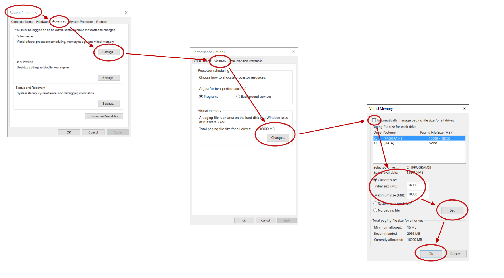

Utiliser le système
Des généralités sur l’interface de travail
1. L’interface graphique
Quand on débute aujourd’hui avec Unix, l’interface graphique semble plus simple à utiliser que la ligne de commandes, car il suffit de cliquer pour réaliser les actions souhaitées. Si on sait utiliser une souris, un gestionnaire de fichiers et un éditeur de texte, on s’en sort.
Gestionnaire de fichiers, éditeur de texte et terminal sont les applications graphiques incontournables.
Chaque desktop en possède un jeu qui lui est propre.
Par exemple, Nautilus est le gestionnaire de fichiers de GNOME, alors que sous KDE Plasma, c’est Dolphin.
Il y a donc pléthore d’applications de type gestionnaire de fichiers, éditeur de texte et terminal.
- Gestionnaire de fichiers
-
Il permet de se déplacer dans l’arborescence des dossiers (ou répertoires) et de manipuler leur contenu : créer des fichiers, les renommer, les déplacer, les dupliquer, etc.
- Editeur de texte
-
Il permet d’ajouter, modifier et supprimer du texte dans un fichier.
- Terminal
-
C’est une fenêtre permettant d’exécuter des commandes en ligne (comme l’écran d’une station de travail des années 70, mais dans une fenêtre).

Peu à peu, avec l’expérience, et contrairement aux apparences, on se rend compte que l’on est souvent plus efficace avec la ligne de commande, pour peu que l’on connaisse les commandes essentielles.
2. La ligne de commande
Dans un terminal, on frappe une commande, on valide et on attend la réponse. Et on recommence.
A l’époque où les interfaces graphiques sont omniprésentes, utiliser la ligne de commande peut s’apparenter à un retour au passé. Pourtant :
-
savoir utiliser les commandes en ligne permet d’élagir son domaine de compétence au-delà de Linux et d’être opérationnel sur tout système Unix ;
-
les commandes en ligne peuvent s’enchainer dans des scripts, ce qui permet d’automatiser et de planifier des actions ; automatiser des actions dans un desktop est difficile ;
-
une procédure en ligne de commandes est plus facile à documenter qu’une procédure en environnement graphique, qui nécessite de faire des copies d’écran :
 -
l’environnement graphique agrémente la vie des utilisateurs, mais il n’apporte aucune nouvelle fonctionnalité.
Sous Unix, tout est réalisable avec les commandes en ligne, alors que tout n’est pas réalisable via le desktop.
C’est l’inverse sous Windows : tout n’est pas réalisable en ligne de commandes, il faut parfois passer par l’interface graphique.
En caricaturant, on peut dire que travailler en environnement graphique demande de passer du temps à rechercher la bonne option dans le bon menu, la bonne case à cocher dans le bon formulaire, le bon bouton à presser dans la bonne popup. Alors que travailler dans un terminal demande de connaitre les commandes et leurs options usuelles.
Heureusement pour la ligne de commande, il existe un manuel en ligne.
C’est la commande man qui, pour chaque commande, explique son objectif, ses paramètres, ses options.
Elle peut citer également d’autres commandes connexes,
ce qui permet d’élargir progressivement son champ de connaissance.
Le manuel est LA documentation de référence : les informations qu’il fournit sont précises et exhaustives
(les pages de manuel sont généralement rédigées par les auteurs des commandes eux-mêmes).
Par exemple, la commande :
$ man manaffiche le mode d’emploi complet de la commande man elle-même.
On a des exemples d’utilisation,
et on apprend qu’il existe aussi une commande whatis.
|
Les pages de manuel peuvent sembler rébarbatives au début, mais on s’y habitue rapidement, car elles ont toutes la même structure : NOM
le nom et l'objet de la commande en 1 ligne
SYNOPSIS
la syntaxe d'appel
DESCRIPTION
ce qu'elle fait en détail
OPTIONS
énumération des options
EXEMPLES
exemples d'utilisation
VOIR AUSSI
des commandes connexes
|
3. Le système de fichiers (filesystem)
Le système de fichiers est l’organisation de l’espace disque. C’est une arborescence de répertoires.
Par exemple, le répertoire personnel (le homedir) d’un utilisateur contient typiquement les sous-répertoires suivant :
{kind=link}
.
├── Bureau
├── Documents
├── Images
├── Modèles
├── Musique
├── Public
├── Téléchargements
└── VidéosUn répertoire peut contenir des sous-répertoires, des fichiers, des liens, etc. On appelle entrée tout ce que peut contenir un répertoire. Par conséquent, répertoires, fichiers, liens hard, liens symboliques sont des entrées de répertoire.
Le répertoire racine de l’arborescence est nommée /.
Voici à quoi ressemble l’arborescence de répertoires typique d’un système Unix :
/ ├── bin ├── boot ├── dev ├── etc ├── home │ ├── linus │ ├── ken │ ├── richard │ └── jacquelin ├── lib ├── mnt ├── root ├── sbin ├── tmp ├── usr └── var
Quelques répertoires à repérer :
-
bin: commandes pour les utilisateurs (binaries) -
dev: périphériques (devices) -
etc: fichiers de configuration -
home: répertoires des dossiers personnels (homedirs) -
lib: bibliothèques (librairies) -
mnt: répertoire vide destiné aux montages -
sbin: commandes pour le super utilisateur (system binaries) -
tmp: répertoire ouvert à tout le monde en lecture et écriture, destiné aux fichiers temporaires
Remarques :
-
sur certains Unix,
homes’appelleusers; -
à l’origine, il n’y avait pas de répertoires
sbin, toutes les commandes étaient dansbin(et cette idée revient à l’ordre du jour actuellement).
4. Commandes en ligne
Les commandes ont la forme suivante :
$ commande option1 options2... argument1 argument2...Un argument peut être obligatoire ou facultatif.
Une option est une lettre précédée d'1 tiret (option courte, exemple -a) ou bien
d’un mot précédé de 2 tirets (option longue, exemple --group).
Exemple :
$ id (1)
$ id root (2)
$ id root daemon (3)
$ id -g (4)
$ id -g -n (5)
$ id -gn (6)
$ id -g operator (7)
$ id --group (8)
$ id --group --name (9)
$ id --group --name root (10)| 1 | commande sans argument et sans option |
| 2 | commande avec 1 argument |
| 3 | commande avec 2 arguments |
| 4 | commande avec 1 option courte |
| 5 | commande avec 2 options courtes |
| 6 | équivalent à la commande précédente |
| 7 | commande avec 1 option courte et un argument |
| 8 | commande avec 1 option longue |
| 9 | commande avec 2 options longues |
| 10 | commande avec 2 options longues et un argument |
Une option peut nécessiter une valeur :
$ ls --color=always /
$ ls --color=never /
$ ls --color=toto /- Résumé
-
commande à retenir :
man